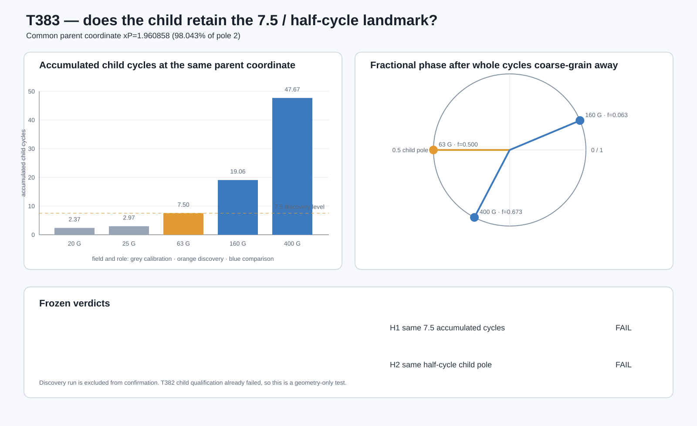

T383 — 7.5 child cycles before parent pole
Answer first
BOTH_REJECTED. Literal 7.5-cycle invariance: FAIL. Half-cycle pole lock: FAIL.
The T382 child failed qualification. T383 tests only the frozen candidate geometry and cannot establish neutrino timing.

All fields at the common parent coordinate
| G | role | accumulated cycles | fractional phase | native child ARA | distance to 0.5 |
|---|---|---|---|---|---|
| 20 | calibration | 2.374012 | 0.374012 | 1.702704 | 0.125988 |
| 25 | calibration | 2.970057 | 0.970057 | 0.017645 | 0.470057 |
| 63 | discovery | 7.500000 | 0.500000 | 2.000000 | 0.000000 |
| 160 | comparison | 19.063275 | 0.063275 | 0.077994 | 0.436725 |
| 400 | comparison | 47.673439 | 0.673439 | 1.462706 | 0.173439 |
| 1000 | diagnostic | 119.198851 | 0.198851 | 0.684123 | 0.301149 |
| 2000 | diagnostic | 238.407870 | 0.407870 | 1.837080 | 0.092130 |
| 4000 | diagnostic | 476.825907 | 0.825907 | 0.540938 | 0.325907 |
Reproduce
Run t383_test_7p5_parent_pole.py from the repository root.